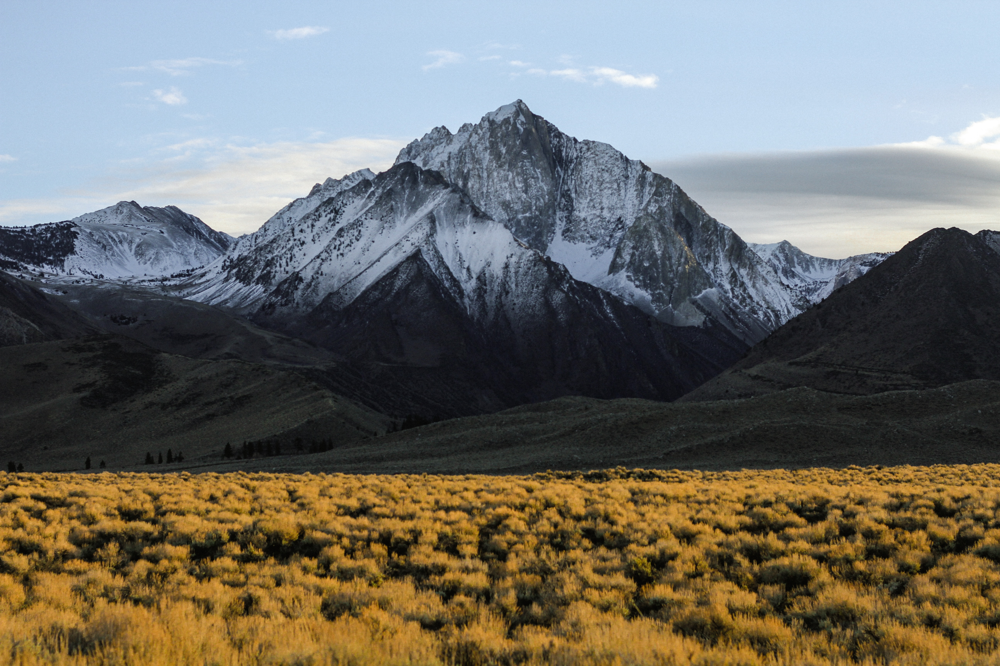

NATUREZA:
Explorar a natureza é uma atividade incrível que pode proporcionar uma série de benefícios físicos e mentais. Ao estar em contato com a natureza, é possível reduzir o estresse, aumentar a criatividade e melhorar o bem-estar geral.
Além disso, a natureza oferece um ambiente diverso e fascinante para se explorar, com muitas espécies de plantas e animais para serem observados. Caminhadas em trilhas, acampamentos, escaladas, mergulhos e passeios de barco são algumas das atividades que podem ser realizadas para se conectar com a natureza.
É importante lembrar, no entanto, que devemos explorar a natureza de forma consciente e responsável, respeitando o meio ambiente e as criaturas que nele habitam.
PRAIAS:
As praias são um exemplo maravilhoso da natureza que podem ser exploradas de muitas maneiras. Elas são consideradas por muitos como um refúgio para relaxar, praticar atividades físicas, contemplar a beleza natural e socializar.
As praias oferecem uma vasta gama de atividades, desde esportes aquáticos, como surf, stand-up paddle e mergulho, até simplesmente relaxar em uma cadeira de praia ou construir castelos de areia.
As praias também são importantes habitats para muitas espécies de animais e plantas, como aves marinhas, tartarugas e plantas costeiras.
É importante lembrar que, ao visitar a praia, é preciso ter cuidado com o impacto humano no ambiente. Devemos sempre respeitar as áreas protegidas e não deixar lixo na praia.
MONTANHAS:
Assim como as praias, as montanhas também são um exemplo maravilhoso da natureza que podem ser exploradas de muitas maneiras.
As montanhas oferecem uma grande variedade de atividades, desde caminhadas e escaladas até esportes de inverno, como esqui e snowboard.
Além disso, as montanhas possuem uma grande biodiversidade de fauna e flora, sendo habitat de muitas espécies de animais e plantas que precisam ser protegidos.
Ao explorar as montanhas, é importante lembrar que a prática de atividades ao ar livre pode ter impacto no meio ambiente.
É necessário tomar medidas para minimizar esse impacto, como utilizar trilhas pré-estabelecidas, não deixar lixo e não perturbar os animais e as plantas locais.
FLORESTAS:
As florestas são ecossistemas complexos e diversificados, que oferecem uma ampla gama de benefícios ecológicos, sociais e econômicos.
As florestas podem ser exploradas de muitas maneiras, desde atividades de recreação, como caminhadas e acampamentos, até a colheita sustentável de recursos florestais.
Além disso, as florestas são o lar de muitas espécies de animais e plantas, algumas delas ameaçadas de extinção.
Elas também possuem um papel fundamental na manutenção do equilíbrio climático global, contribuindo para a regulação do clima e para a proteção da biodiversidade.
No entanto, a exploração humana das florestas também pode ter um grande impacto negativo no meio ambiente.
A exploração ilegal de madeira, a expansão da agricultura e a mineração são algumas das atividades que podem levar ao desmatamento, à perda de biodiversidade e ao aumento da emissão de gases do efeito estufa.